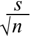
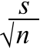
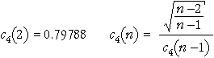
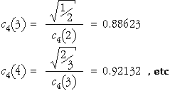
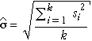

Samples instead of individual values
Although control charts for individual values are sometimes used, it is more common to examine samples from a process at regular intervals rather than individual values. There are a few reasons:
Control chart for means
We first consider detection of whether the mean output level of a process is changing, based on a run chart of the means of successive samples. Sample means of n values vary less from sample to sample than individual values, and have standard deviation
 =
= 
The control limits for a control chart of sample means are therefore...
 ± 3
± 3
where  and s
are estimates of the mean and standard deviation of individual values when the
process is in control. These control limits should be distinguished carefully
from the corresponding control limits for individual values,
and s
are estimates of the mean and standard deviation of individual values when the
process is in control. These control limits should be distinguished carefully
from the corresponding control limits for individual values,
 ± 3s
± 3s
Since the control limits used in a control chart for means are closer to  than those in a control chart for individual values, the chart is more sensitive
to changes in the process mean over time.
than those in a control chart for individual values, the chart is more sensitive
to changes in the process mean over time.
Training data
In order to obtain control limits, we must know the mean and standard deviation of the measurements when the process is 'in control'. These are usually estimated from a set of 'training samples' in which great care is taken to avoid special causes.
The process mean,  is estimated by the mean value from the training samples. We will initially
use the standard deviation of the training sample as our estimate, s,
but will describe a better estimate at the end of this page.
is estimated by the mean value from the training samples. We will initially
use the standard deviation of the training sample as our estimate, s,
but will describe a better estimate at the end of this page.
Paint primer thickness
The diagram below shows thickness of paint primer in mils (an imperial measurement equal to one thousandth of an inch), measured from a sample of 10 items each morning and afternoon for 5 successive mornings and afternoons. We will regard these data as a training set from which we obtain control limits for later samples of primer thickness.
(In practice, there are usually more training samples, but we use a small real data set for illustration.)
The control limits that are initially shown are those for a run chart of individual values — mean ± 3 standard deviations for the 50 values in the training data.
Use the scroll bar to display the samples that were measured over the next 15 half-days. No values are outside the 3-standard deviations limits, so we would conclude that the process is in control.
Now click the checkbox Show Means. The raw values in the samples are dimmed and the sample means are displayed, joined by blue lines. The sample means are considerably less variable than the raw values, so the control limits are redrawn closer to the centre line.
Based on the means, we again conclude that there is no evidence of a shift in the process mean.
As in control charts for individual values, additional triggers can be used that depend on several successive means. These are defined in the same way as those in control charts for individual values. For example, six successive sample means either increasing or decreasing suggest that there might be a special cause.
Better estimate of s from training samples (advanced)
A different estimate of the process standard deviation, s, is usually preferred to the overall standard deviation of the values in the training samples.
Instead, s is usually estimated from the standard deviations within each of the training samples. We denote the standard deviations of the k training samples, each of size n, by s1, s2, ..., sk. The most commonly used estimate of s is...
where the value c4(n) is a constant that depends on the sample size in each of the k samples, n. Its value may be obtained from tables or using the formulae

The second part of this formula allows the value of c4 for sample size n to be obtained from its value for sample size n - 1, as illustrated below.

(An alternative estimate of s that is occasionally used is

Although this estimate is better when the data have a reasonably symmetric distribution, the earlier estimate is more 'robust' to problems in the training data.)